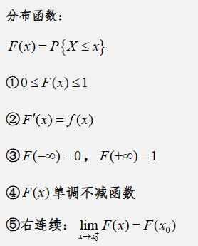
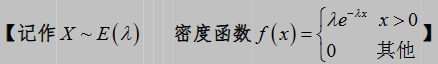
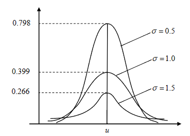
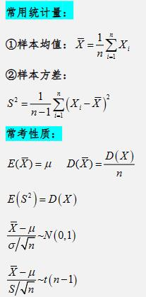

概率论
目录
1.1事件的关系及运算1.2古典概型
1.3几何概型
2.1条件概率、乘法公式
2.2全概率公式、贝叶斯公式
3.1离散型随机变量分布律、分布函数
3.2离散型随机变量函数的分布
3.3连续型随机变量的概率密度、分布函数
3.4连续型随机变量函数的分布
4.1离散型——二项分布
4.2离散型——泊松分布
4.3连续型——均匀分布
4.4连续型——指数分布
4.5连续型——正态分布
5.离散型二维随机变量
6.连续型二维随机变量
7.二维随机变量函数的分布
8.1一维随机变量期望与方差
8.2二维随机变量期望与方差
8.3协方差
8.4切比雪夫不等式
9.1独立同分布中心极限定理
9.2二项分布中心极限定理
10.1常用统计量及性质
10.2三种常见分布
11.1矩估计
11.2最大似然估计
11.3无偏估计
12.置信区间
1.1事件的关系及运算
首先来看一下事件之间的关系，以文氏图举例

既然事件有了关系，那么必然也能进行运算，下面是一些常用的关系之间的运算公式（重点）
1.2古典概型
古典概型简单来说，需要满足两个条件
若在随机试验中样本空间只有有限多个样本点，样本点出现的可能性相同称这种试验为等可能随机试验或古典概型。
实际上是把“比例”转化为“概率”。从一个静态的过程变成动态的过程。一般来说计算内容有放不放回两种抽样
计算方法就是按照下面的组合公式列举情况相乘就好，简单来说就是在n个不同的元素中取m个不重复的元素形成一个子集相乘
比如在一箱子中共有7个球，3个黑球4个白球，取3个球就是n=7，m=3，取什么球n就是什么球的样本空间

1.3几何概型
很简单，就是将问题转换图像，计算所求概率在图中的占比

2.1条件概率、乘法公式
首先来说条件概率，顾名思义，在某个事件发生的情况下事件发生的概率

第一个公式表示的是z在A事件发生的条件下B事件发生的概率，第二个公式就是反过来
也就是斜杠后面的事件发生的条件下斜杠前面事件发生的概率=斜杠前后事件相交的概率/斜杠后面事件发生的概率
通过条件概率推导，即可得出乘法公式

举个例子，投一颗骰子，事件A为“点数大于3”，事件B为“点数为5”。则A条件下B发生的概率是多少？
由于是骰子，所以样本空间是1到6
通过条件概率公式，我们首先需要知道A与B相交的概率，由题可知，当点数为5时A与B相交，即相交的概率为⅙
A的概率为½，那么答案就是概率相比，结果为⅓
B的概率与A条件下的概率唯一的区别就是样本空间不同，前者样本空间为{1,2,3,4,5,6},后者为{4,5,6}
2.2全概率公式、贝叶斯公式
这里我们通过一道例题来讲解
甲、乙、丙三车间加工同一产品，加工量分别占总量25%，35%，40%次品率分别为0.03，0.02，0.01现从所有产品中抽取一个产品，试求：
(1)该产品是次品的概率?
(2)若检查该产品是次品，求该产品是乙车间生产的概率？
首先来看第一问，我们用全概率公式解题时是有几个步骤的
①设A为发生的事件
这里设事件A为该产品是次品
②找出完备事件组Bi;
也就是事件来源与哪几种途径或者哪几种情况
像是此题就是B1为甲厂生产，B2为乙厂生产，B3为丙厂生产
③写出P(Bi)及P(A|Bi)
由题可得
P(B1)=1/4; P(B2)=7/20 P(B3)=2/5;
P(A|B1)=0.03 P(A|B2)=0.02 P(A|B3)=0.01
④带入全概率公式
P(A)=P(B1)P(A|B1)+P(B2)P(A|B2)+P(B3)P(A|B3)=37/2000
这样第一问的答案就得出来了
接下来看第二问，明显是要我们求P(B2|A)的概率，这时我们就需要‘贝叶斯（逆概）公式’

代入公式可得出结果为 14/37
3.1离散型随机变量分布律、分布函数
首先举个例子
盒中有6个球，其中4个白球，2个黑球，从中任取2个球，求：
(1) 抽到白球数 X 的分布律； （2）随机变量 X 的分布函数
第一问很好求，X可以取0，1，2，只要根据之前学的古典概型分别算x即可，计算过后画一个表

第一问就解决了，接下来看第二问
首先来看一下分布函数的性质

所以能够看出，分布函数其实是有累加的形式，根据第四条，我们写范围时常写成累加形式
所以该题的分布函数
进行整理后，可以得到
而通过分布函数求分布律只需要先写分段点，也就是范围最前面的数，再用该分段点处的概率减去上一个概率就行，可以通过上题反推一下，这里不多赘述
3.2离散型随机变量函数的分布
这种通常是给你一个变量的分布律，让你求该变量形成的函数的分布律
算法很简单，计算函数的值，再合并相同项即可，这里给出例子

3.3连续型随机变量的概率密度、分布函数
先给出定义
我们可以发现，概率密度f(x)其实就是分布函数F(x)的导
这里给出一道例题

第一问通过定义一可算，二三问仅需要根据题意划定范围求积分即可要注意的是，分布函数是累加的，计算的时候也要将积分相加
接下来是连续型随机变量的分布函数，还是先列出性质
和离散型不一样的只有第二条，求导可以得到概率密度
所以，如果求系数就代入断点计算，求概率和离散型一样，求概率密度求导即可
3.4连续型随机变量函数的分布
分两种情况，g(X)单调可导以及非单调可导，根据步骤一步步计算即可，不多赘述
4.1离散型——二项分布
二项分布简单来说就是做n次重复的独立实验的概率

其中，n为实验的次数，p为每次实验的概率，若确定是二项分布，代入计算即可
4.2离散型——泊松分布
如果分布律满足下列，则称为泊松分布

4.3连续型——均匀分布
4.4连续型——指数分布
4.5连续型——正态分布
我们用图来举个例子
我们可以发现两件事，图像关于μ对称，并且σ越小，图像越陡
接下来说标准正态分布
标准正态分布就是正态分布中的μ为0，σ为1，这里我们的用Φ(x)表示
这里第三条的意思是，如果满足不标准的正态分布，在求概率是，根据②查表会有一个值，考试一般会给
5.离散型二维随机变量
这里我们要讲五个知识点，分布律、边缘分布律、独立性、函数的分布、条件分布
首先来道例题
第一问就是在表中对应数值，一个是0.3，一个是四个相加为0.7
第二问边缘分布就是看x不同值的概率相加，比如x=-1时横向相加为0.6，x=2时为0.4，画出相应的表即可
Y的边缘分布律同理
第三问问是否独立，首先我们要看独立的条件
计算发现，当X,Y都等于-1时，等式不成立所以不相互独立
第四问就是把函数的值带进去一一对应概率即可
第五问条件概率公式计算即可
6.连续型二维随机变量
这里我们要讲四个知识点，概率密度，边缘概率密度，条件概率密度，独立性
不过这里需要用到二重积分的算法，这里就自行复习
还是先来道例题
先将性质放出来
由此可得，第一问仅需要算二重积分即可，结果c=4，P范围时小于1，结果是⅙
第二、三、四问代入计算即可
7.二维随机变量函数的分布
首先来看Z=X+Y
我们有两种解法

而具体使用哪种替换，我们的原则是，谁简单，替换谁
确定好替换谁后，将①的公式写出来，我们先要确定被积函数是什么，确定的方法就是根据原式替换即可
接下来确定积分范围，根据z的取值不同分情况代入二重积分计算即可
而接下来的Z=XY以及Z=max{X,Y}相差不大，这里给出步骤，按步骤计算即可
 \
\
接下来这个简单来说就是先求分布函数再求导

再额外来两个填空题，这个结果可以当作结论来记
8.1一维随机变量期望与方差
分为离散型和连续型，针对不同有不同的算法
提一嘴，方差的平方根称为标准差，对于数学期望和方差的性质需要知道
还有一些常用的数学期望和方差

8.2二维随机变量期望与方差
对于二维，在求期望时只需要先写出边缘分布律再按照一维计算即可
若要求函数，只需要将对应变量的值代入函数再乘上概率相加即可
8.3协方差
8.4切比雪夫不等式
9.1独立同分布中心极限定理
首先给上定理
意思是，如果随机变量满足这四点，且求和近似与正态分布，其中正态分布的期望是nu、方差是nσ²
那么我们就把求和的概率转换成了正态分布的概率
像这种题都有一定的特点，独立、同分布、期望、方差存在、求和
9.2二项分布中心极限定理
如果X满足二项分布，就将他认为近似与正态分布，不过是在n很大，p很小的情况下
10.1常用统计量及性质
注意，统计量不含任何未知参数